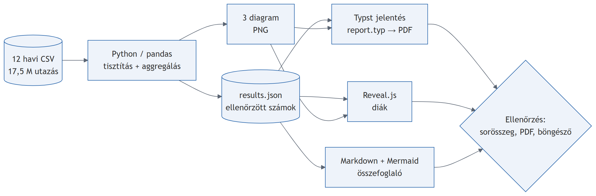
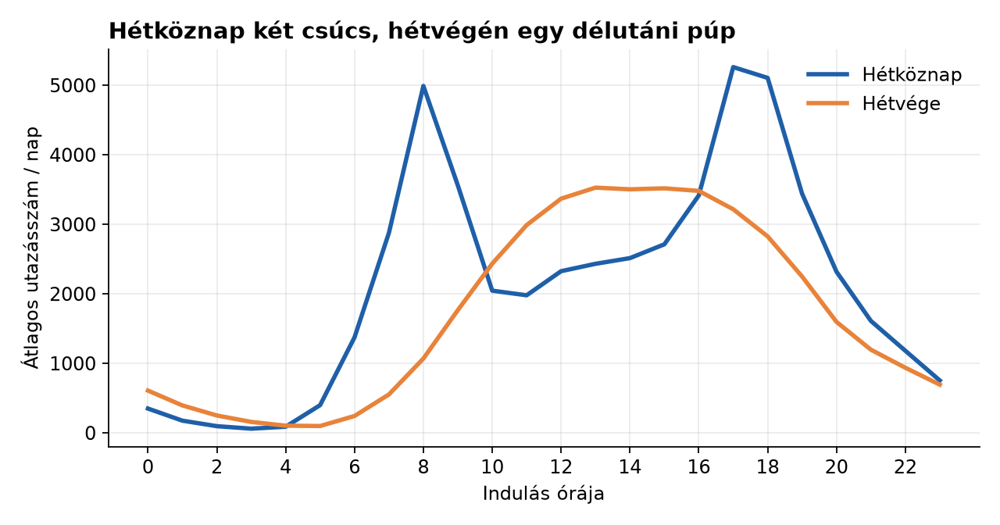
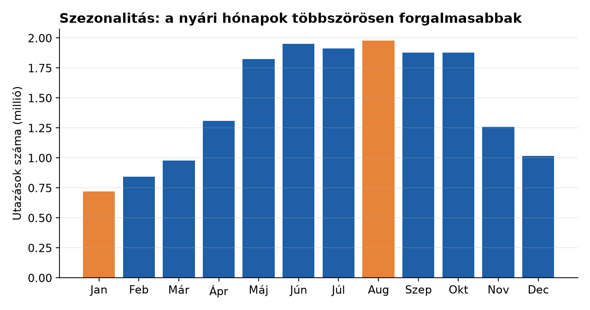
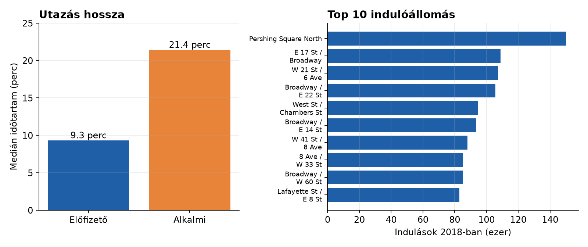

Citi Bike 2018
Többlépéses AI-workflow: CSV → Python → Markdown/Mermaid → Typst → Reveal.js
BME AUT snippet · Claude-dal készített demó
Adat és kérdések
17 543 815tisztított utazás, 2018
821indulóállomás
12havi CSV
- Mikor használják a legtöbben a rendszert?
- Mennyiben más a hétvége, mint a hétköznap?
- Mennyi ideig tart egy út, és ki utazik tovább?
- Hogyan változik a forgalom a szezonok között?
A workflow

Mermaid-forrás: workflow.mmd. A Typst-jelentés és a diák ugyanabból a results.json-ból készülnek.
Hétköznap két csúcs, hétvégén egy púp

- Hétköznapi csúcs: 17, 18 és 8 óra, kb. 5 259 indulás/nap
- 8 órakor a hétköznapi forgalom 4,7× a hétvégié
- Hétvégi csúcs 13 órakor; a hétvégi nap 20%-kal kevesebb utat ad
Szezonalitás

- augusztus: 1,98 M utazás
- január: 0,72 M utazás
- Arány: 2,75×
Utazási idő és állomások

- Medián: előfizető 9,3 perc, alkalmi 21,4 perc · top 10 állomás = 5,7% az utakból
Korlátok
- Csak 2018: nincs évek közötti trend
- Nincs időjárás- és ünnepnap-adat, az okok csak feltételezések
- Csak indulások: a készlethiány és az újraosztás nem látszik
- 4 524 db 24 óránál hosszabb utat kizártunk
Konklúzió
- Az adatban egyértelmű napi és éves ritmus látszik
- Egy forrás (
results.json) → jelentés és diák, kézi átírás nélkül
- A kérdéseket és a következtetések ellenőrzését az embernek kell végeznie